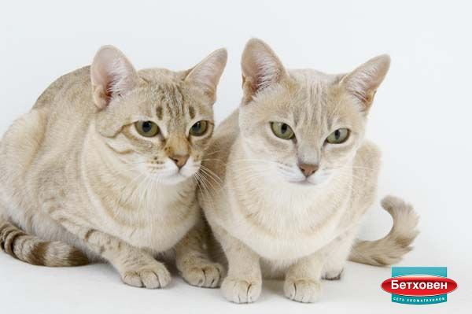
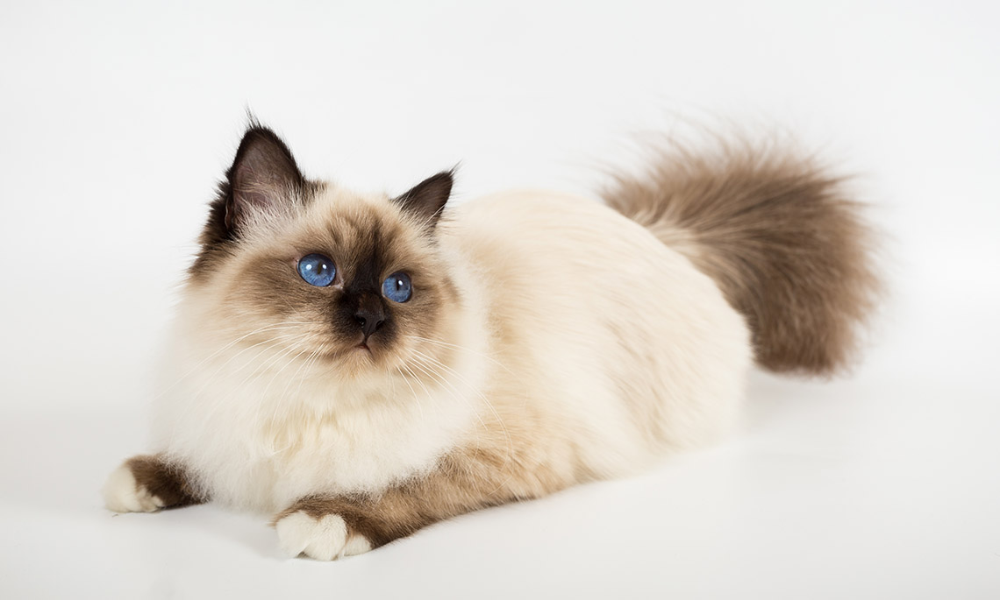
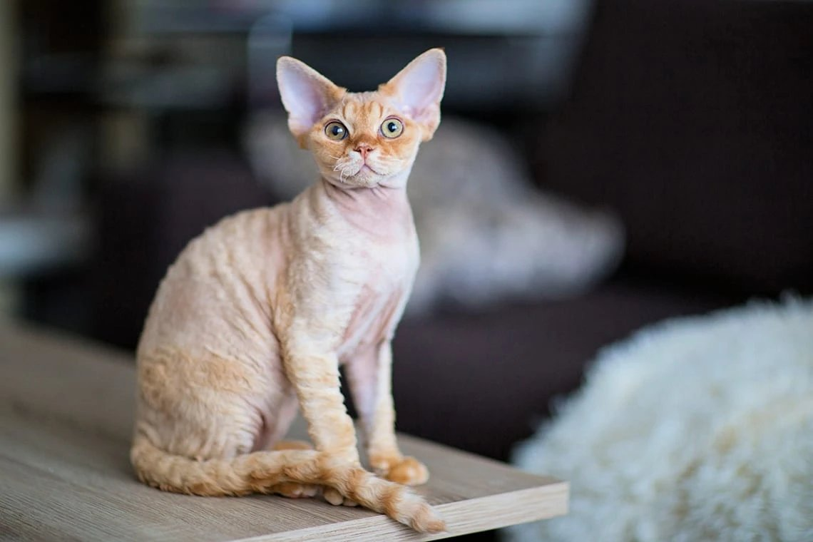
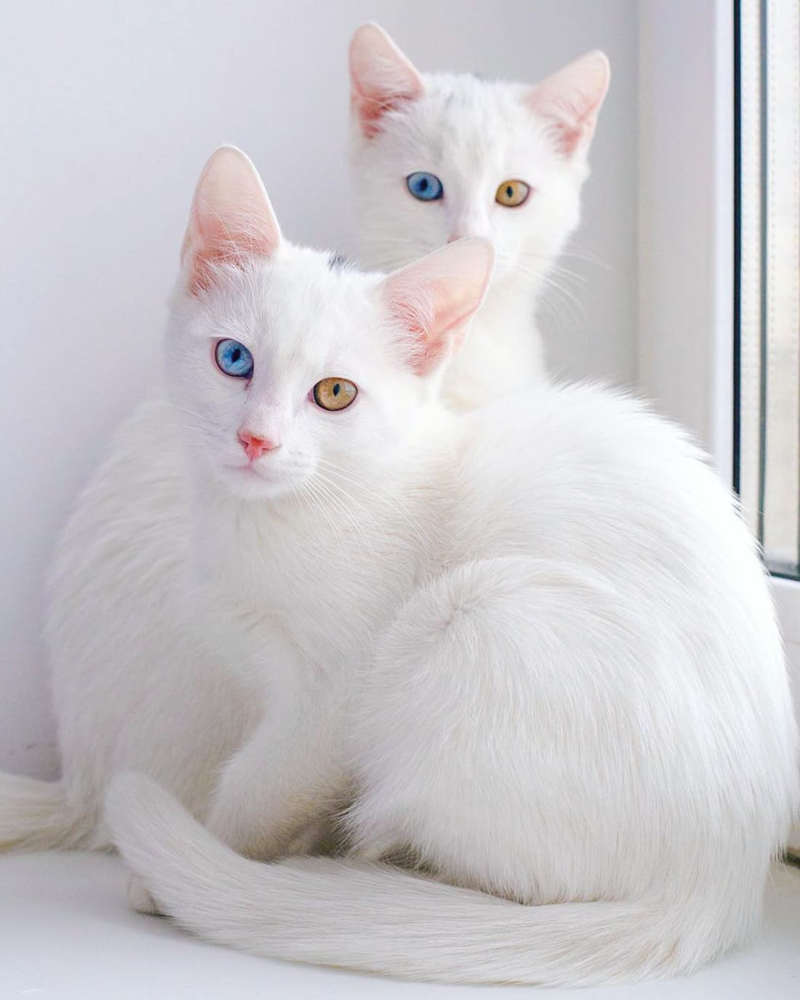
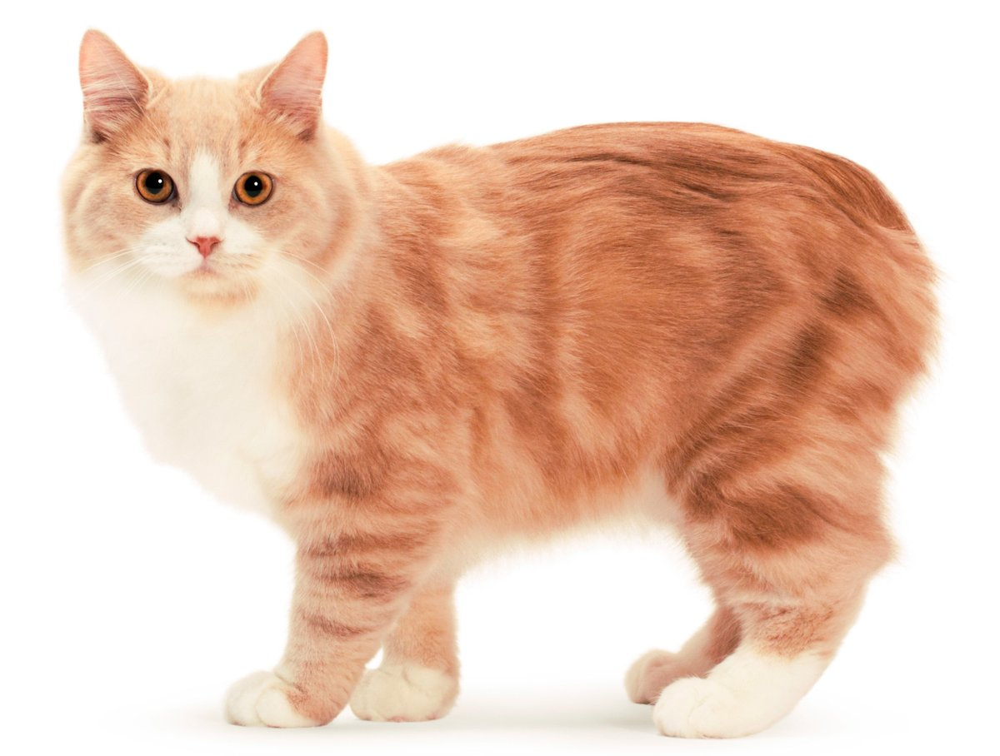
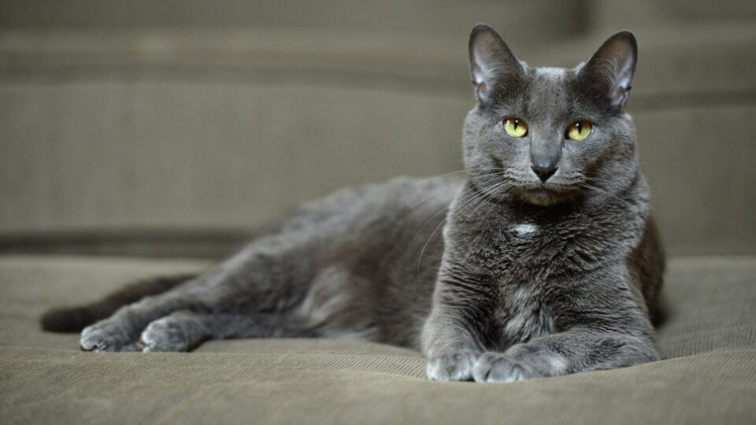
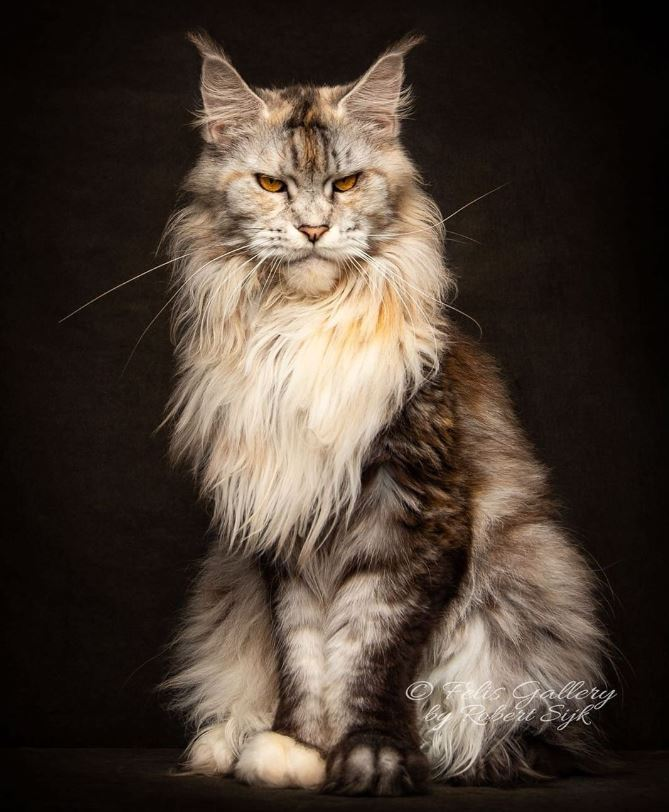
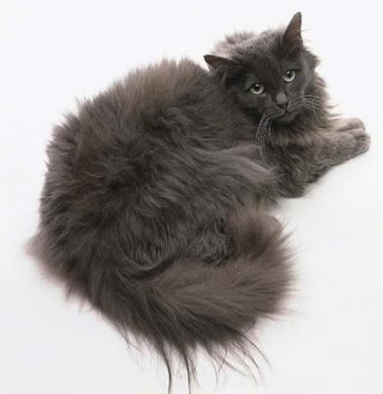

Готовы взять домой кошку, но не уверены, какая порода лучше всего подходит вам и вашей семье? С помощью нашей библиотеки вы сможете разобраться, чем отличаются разные породы кошек, и решить, какая порода вам больше подходить. Вы узнаете об истории появления каждой породы, особенностях характера их представителей, а также особых пищевых потребностях кошек той или иной породы.
Какие породы кошек будут представлены:

Австралийский мист — редкая и на сегодняшний день пока единственная порода домашних кошек, выведенная на территории Австралии. Обладатели уравновешенного и дружелюбного нрава. В юном возрасте они довольно активны и любопытны, но с годами становятся все более спокойными и даже ленивыми. Эти кошки с любовью относятся к своим хозяевам и сильно привязываются к ним, однако совершенно не боятся одиночества — поэтому отлично подходят для занятых людей, которых подолгу не бывает дома.
При выведении породы специалисты изначально ставили цель: получить максимально «домашнюю» и покладистую кошку, и успешно ее достигли. «Австралийцы» абсолютно комфортно чувствуют себя даже в небольших квартирах и не испытывают ни малейшего желания исследовать улицу. Лучшая «прогулка» для них — созерцание окружающего мира с высоты подоконника.

Бирманская кошка — довольно большая кошка плотного телосложения с короткими ногами. Имеет широкую голову и уши среднего размера. Порода полудлинношерстная, с более темным окрасом пятен, морды, лап, ушей и хвоста при светлом цвете тела. У бирманской кошки голубые глаза и четыре белых «носочка» на лапах. Передние «перчатки» покрывают только нижнюю часть лапы, а задние «носочки» — более длинные. Бирманские кошки бывают различных окрасов.
Бирманские кошки известны как любящие и преданные животные. Эту породу специально выводили как кошку-компаньона. Бирманцы покладисты и скромны, они отличаются общительностью, умом и дружелюбием. Эти кошки ориентированы на людей, любопытны, при этом отличаются спокойным и тихим поведением.

Девон-рекс — питомец с необычной внешностью, преданный друг и жизнерадостный непоседа. Шерсть девон-рекса имеет характерную марсельскую волну, особенно на спине, где образуются мелкие барашки. Широкие скулы, большие уши и глаза придают этой кошке «инопланетный» вид, а по характеру она больше напоминает собаку — «рекс» всюду следует за человеком и тяжело переносит одиночество. Девон-рекс может быть любых окрасов и вариантов пятнистости.

Као-мани — это стройные, грациозные и мускулистые кошки с чисто белой, короткой, гладкой, близко прилегающей к телу шерстью. Уши — от среднего до крупного размера. Нос немного искривлен. Цвет глаз — это наиболее яркая отличительная особенность кошки. Он может быть в цветовом диапазоне от голубого до янтарного или представлять собой смесь голубых или иных тонов. В Таиланде као-мани с разными по цвету глазами считается самой лучшей кошкой. Часто верят, что она приносит удачу. Иногда белые котята рождаются с небольшой более темной меткой на голове, которая исчезает примерно к году жизни. Это нормально.
У као-мани репутация активных, ориентированных на внешний мир, общительных, умных и игривых кошек. С удовольствием проводят время в обществе хозяина. Довольно «разговорчивая» порода, общаются человеком с помощью мурлыканья.

Порода кимрик — крепкого телосложения, коренастая, по строению напоминает британскую короткошерстную. У кошек этой породы задние ноги длиннее передних. Кимрики могут прыгать как кролики. Это объясняется деформацией позвоночника, которая похожа на расщепление позвоночных дуг и связана с отсутствием хвоста. У этих кошек большие глаза и широко поставленные уши. Кимрик имеет густую шерсть и довольно плотный подшерсток, что придает кошке округлые очертания. Кимрики бывают различных окрасов и с разными вариантами пятнистости, за исключением сиамского типа.
Кимрик — это тихая и одновременно игривая кошка. Она может быть немного пугливой и сдержанной в присутствии чужих. Дело в том, что кимрик привязывается и доверяет только хозяину. Часто взрослые кошки этой породы ведут себя, как котята — зависит от того, в каком настроении находится питомец.

Шерсть кората — короткая, шелковистая и красивая. Она плотно прилегает к телу. Порода бывает только одного окраса — оттенок голубого с добавлением серебристого. Кожа на носу, губах и подушечках лап — темная, серо-голубая или лавандовая. По внешнему виду порода напоминает русскую голубую кошку, но имеет одинарную, а не двойную шерсть, у нее нет подшерстка. У породы более округлые очертания силуэта в целом и зеленые глаза, скорее напоминающие перидот, а не изумруд. Типичная голова имеет форму сердечка. Уши — крупные, глаза — большие, выражение морды — «встревоженное». Тело — сильное и мускулистое, не такое длинное, как у сиамской кошки, и не такое коренастое, как у британской короткошерстной породы.
У коратов тихий, покладистый характер, при этом они умны и обладают недюжинным интеллектом. Это достаточно активная порода. Кораты преданны хозяину и тяжело переносят разлуку.
Манчкины — коротконогие кошки с длинным туловищем, напоминающие такс. Они не обладают знаменитой кошачьей грацией, но очаровывают своим необычным внешним видом. Могут быть с короткой и длинной шерстью, любых окрасов и вариантов пятнистости.
Манчкины — умные, активные и общительные кошки. Несмотря на свое телосложение, они умеют быстро бегать, любят играть и не боятся покорять вершины. Чтобы добраться до желаемой точки, манчкины тщательно продумывают логистику и используют все подручные средства — кресла, столы и диваны. При этом спускаться с возвышенностей им гораздо сложнее — излюбленные маршруты должны быть приспособлены под нужды пушистого «альпиниста», чтобы он мог самостоятельно возвращаться на землю.

Мейн-кун — самая крупная порода кошек. Она отличается мощным, мускулистым телом и крепкими ногами. Голова клиновидной формы. Уши — большие и высокие. Шерсть длинная и густая, состоит из подшерстка, покрытого плотной блестящей водонепроницаемой шерстью. Волоски на голове, шее и плечах короче и увеличиваются в длину ближе к нижней части спины, на боках и хвосте. Шерсть на животе и «штанах» густая и лохматая. Шея окружена кольцом шерсти, который начинается у основания ушей. У самцов, по сравнению с самками, шея более массивная. Волосы на хвосте длинные и ниспадающие. Кончики ушей украшены кисточками. Лапы также украшены кисточками, в результате чего получается эффект «снегоступов». Мейн-кун имеет более 30 разновидностей окраса. Глаза могут быть зелеными, золотистых или медных оттенков, а у белых кошек — голубыми.
Кошки породы мейн-кун достаточные покладистые, очень игривые и дружелюбные. Они наслаждаются человеческим обществом и любят внимание со стороны хозяина. Часто этих животных можно обнаружить свернувшимися клубком в довольно странных местах. Мейн-куны ведут активный образ жизни: любят высоко забираться и имитировать охоту. Мейн-куны могут издавать звуки, напоминающие чириканье.

Рэгдолл — крупная и величавая кошка с характерным окрасом. Представители этой породы обычно расслаблены, невозмутимы и кажутся ленивыми. Голова широкая, имеет плоскую верхнюю часть, с широко расположенными ушами. У рэгдолла большие глаза насыщенного голубого цвета. Он отличается спокойным, ласковым нравом, миролюбием и преданностью человеку.
Рэгдолл знаменит своим миролюбием и флегматичным нравом, но это не означает, что он не готов играть. Энергии у представителей породы не меньше, чем у других кошек. Такие питомцы сильно привязываются к человеку и готовы проводить с ним рядом целые дни. С любимым хозяином они «разговаривают», ложатся к нему на колени, спят рядом или хотя бы наблюдают за его занятиями. Даже путешествия и переезд на новое место не кажутся им проблемой, лишь бы оставаться вместе с человеком.

Эта порода домашних кошек с полудлинной шерстью насыщенного шоколадного оттенка и выразительными, желто-золотистыми глазами сегодня является одной из самых редких в мире.
Шантильи — кошки с уравновешенным характером: владельцы находят в них своеобразную «золотую середину» между ленивыми лежебоками и энергичными непоседами. Особенно активны они в раннем возрасте, по мере взросления начинают вести более размеренный образ жизни, но всегда не против поиграть и развлечься.
Тиффани привязаны к своим хозяевам и не любят долгого одиночества. Скрасить его питомцам поможет любая компания — в том числе и другие домашние животные, с которыми они ладят без проблем, если не встречают агрессии в свой адрес. К незнакомцам они относятся сдержанно, но и без страха: на колени к гостям они не пойдут, а будут с любопытством наблюдать за ними с «безопасного» расстояния.
| Порода | Вес (кг) | Рост (см) | Продолжительность жизни (лет) | Окрас |
| Австралийский мист | 4-6 | 28-30 | 15-18 | Коричневый (брауни), лиловый (сирень), золотой (корица), персиковый (палевый), голубой, шоколадный, карамельный |
| Бирманская | 4,5-8 | 27-35 | 14-16 | Белый, серо-голубой, темно-коричневый, рыжий, шоколадный, кремовый, лиловый |
| Девон-рекс | 2,3-3,5 | 23-29 | 23-29 | Окрас сплошной (белый, черный, рыжий, голубой, шоколад, лаванда, корица, платина), дымчатый, затушеванный, би- и триколор, полосатый |
| Као-мани | 3-5 | До 30 | 10-15 | Снежно-белый |
| Кимрик | 4-6 | 29-32 | 8-14 | Белый, голубой, чёрный, красный, кремовый, серебристый, черепаховый, кремово-голубой, коричневый |
| Корат | 3,5-5 | 25-30 | 15-19 | Серо-голубой |
| Манчкин | 2,2-4 | 14-16 | 13-16 | Многогранность окрасов и типов шерсти |
| Мейн-кун | 4,5-12 | 25-41 | 12-15 | Более 30 разновидностей |
| Рэгдолл | 4-9 | До 45 | 11-15 | Сиамский, шоколадные пойнты, блю-пойнт, лиловый |
| Шантильи-тиффани | 2,5-5 | 25-30 | 12-15 | Шоколадный, голубой, лиловый, циннамон и палевый |
Также замечательные породы кошек: